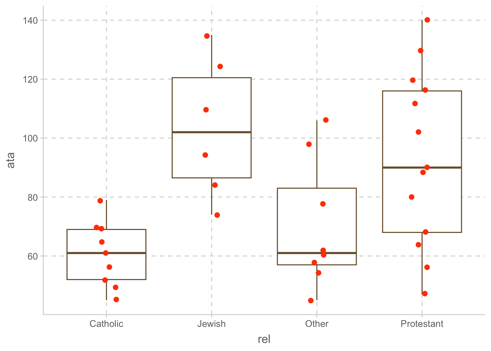
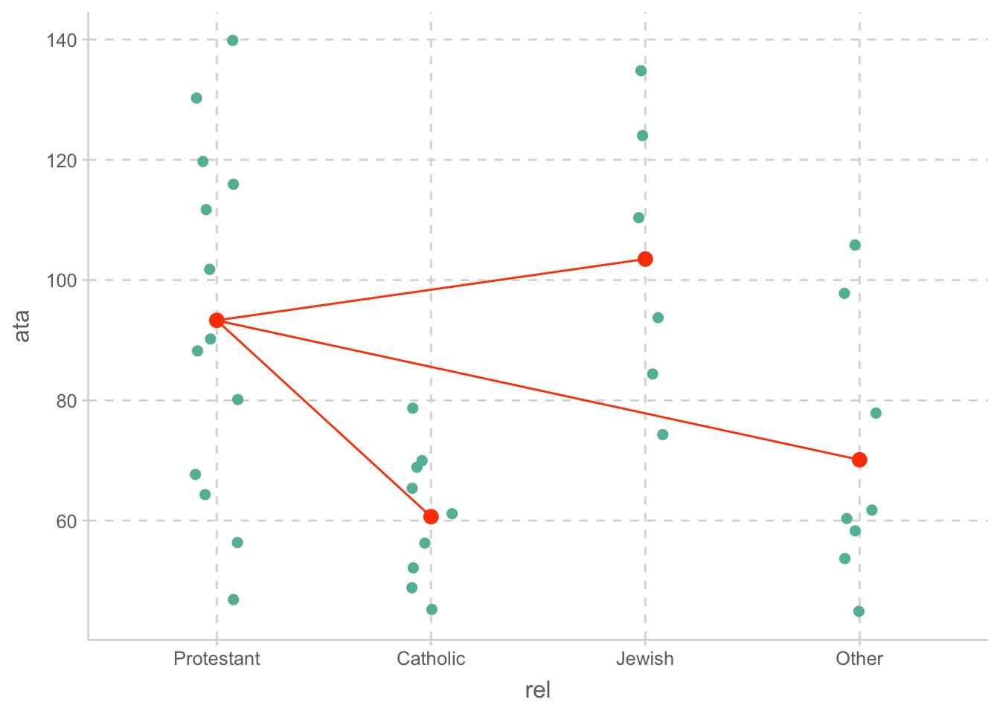
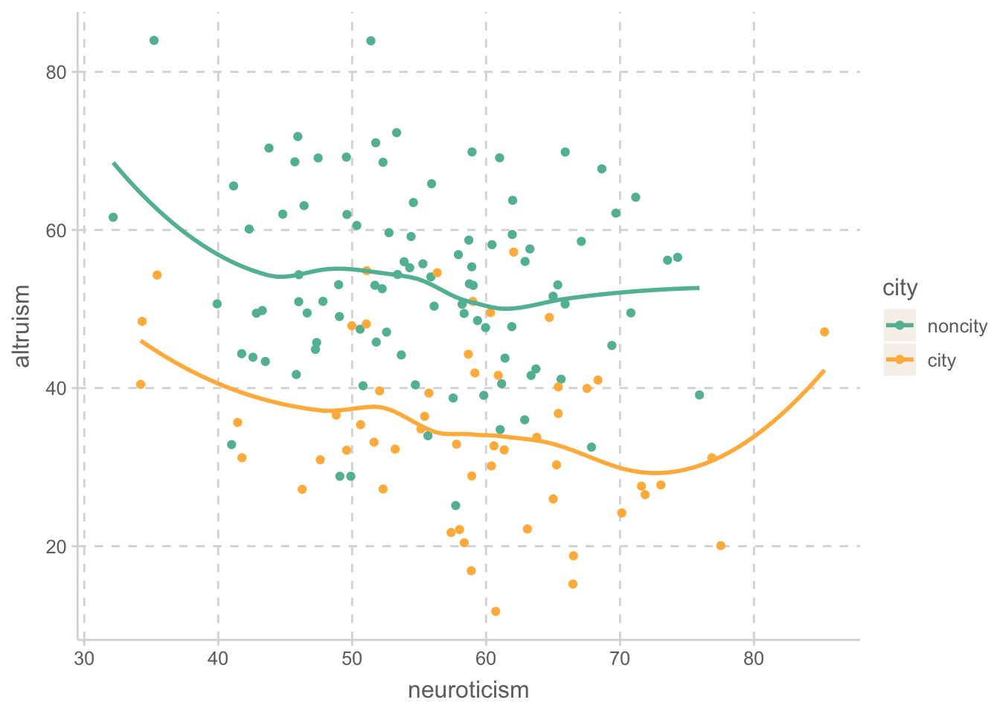
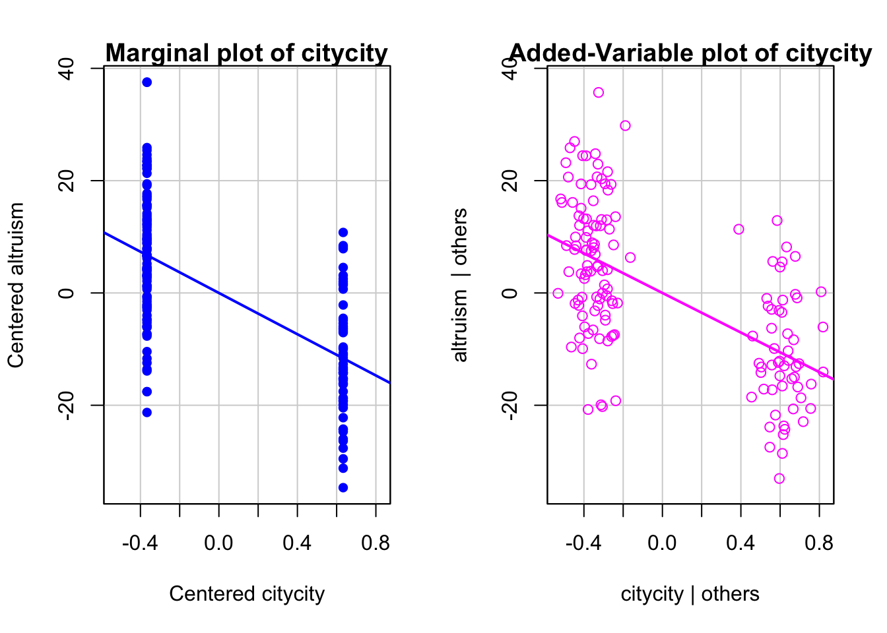
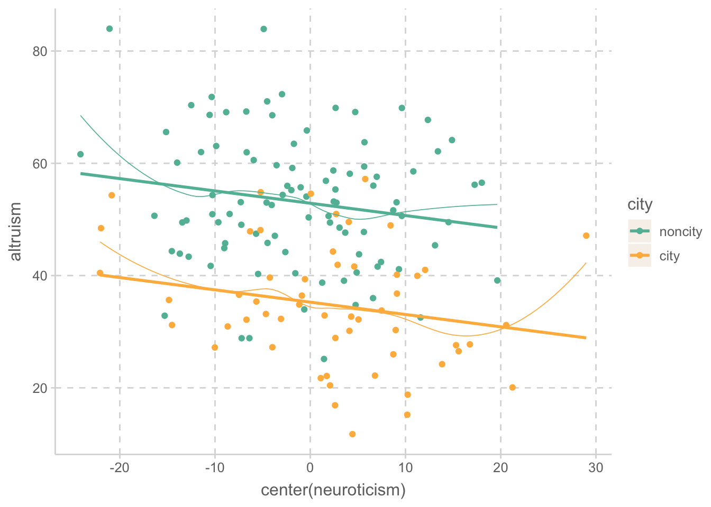
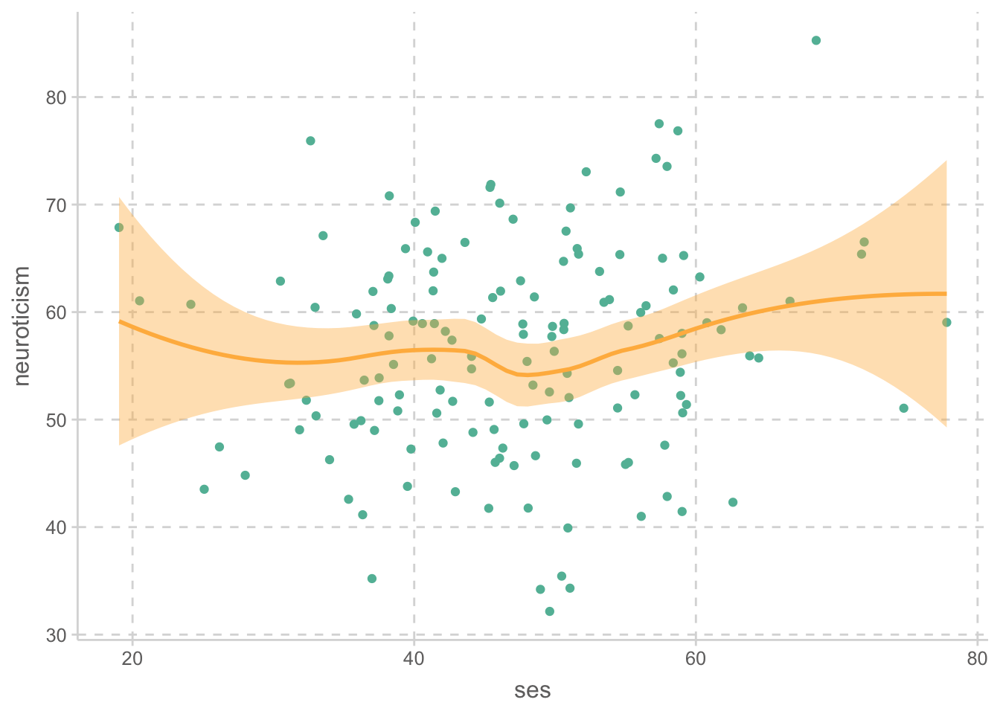
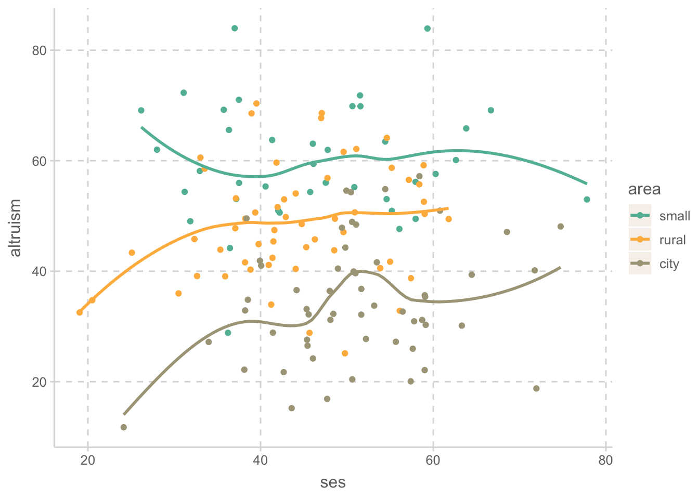
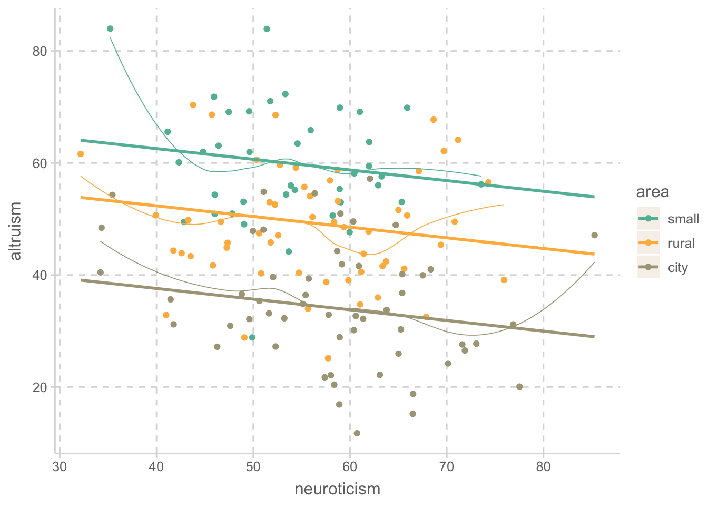

ata <- ata |>
mutate(rel = factor(rel, levels = c("Protestant", "Catholic", "Jewish", "Other")))Categorical IVs
Applied Multiple Regression/Correlation Analysis for the Behavioral Sciences by Jacob Cohen, Patricia Cohen, Stephen G. West, Leona S. Aiken
범주형 변수가 예측변수가 되는 경우, 범주형 변수는 숫자로 변환시켜 분석 가능
범주가 실험 조건이 되는 경우, 예를 들어 통제집단과 처치집단에 대해서 그 차이를 보는 경우, 실험연구의 전통을 가진 ANOVA 프레임워크에서 다루어져 왔고 다양한 용어(ANCOVA, fatorial ANOVA, repeated ANOVA, MANOVA 등등)와 분석 방식이 행해져왔으나, 관찰연구의 전통을 가진 회귀분석의 프레임워크 안에서 통합될 수 있음.
범주를 숫자로 변환시키는 방식은 연구의 목적에 따라 여러 방식으로 coding할 수 있는데, 예를 들어 sequential coding, Helmert coding, effect coding 등등에 대해서는 책을 참고.
10.1 Alternative Coding Systems in Regression Analysis and Linear Models by Richard B. Darlington & Andrew F. Hayes
앞서, 범주가 2개인 성별의 경우: 남자는 0, 여자는 1로 변형시키는 dummy coding으로 indicator variable을 만들어 사용했음
범주형 변수로만 예측하는 경우
범주가 3개 이상인 경우에 대해서 multiple regression을 통해 분석 가능.
Attitude toward abortion (ATA)
종교에 따른 낙태에 대한 (긍정적) 태도의 차이
종교: 개신교, 카톡릭, 유대교, 기타
Data: c08e01dt.csv
ata <- read_csv("data/c08e01dt.csv")
ata
ggplot(ata, aes(x = rel, y = ata)) +
geom_boxplot(fill = "white") +
geom_jitter(width= .1, size = 2, color = "orangered")# A tibble: 36 × 2
rel ata
<chr> <dbl>
1 Catholic 61
2 Other 78
3 Protestant 47
4 Catholic 65
5 Catholic 45
6 Other 106
7 Protestant 120
8 Catholic 49
9 Other 45
10 Other 62
# ℹ 26 more rows
다음은 dummy coding을 하는데 기준이 되는 범주(reference group)를 무엇으로 하느냐에 따른 차이를 보여줌
일반적으로 범주가 N개이면 N-1개의 dummy variable이 필요함.
각각의 dummy variable은 membership를 나타내며, 해당 범주에 속하는 경우 1, 아닌 경우 0으로 coding됨.
- 여기서는 Protestant를 reference로 하는 B번을 사용하는데
- \(C_1\) : Catholic인지 아닌지
- \(C_2\) : Jewish인지 아닌지
- \(C_3\) : Other인지 아닌지
p.304
회귀 계수
우선, 명목변수를 R의 factor 타입으로 변환
rel을factor로 변환; 순서를 고려해서Protestant를 reference group으로 지정하기 위해 첫번째 level로 지정
R에서 기본적으로 factor는 dummy coding으로 변환
실제 내부적으로 어떻게 변환되는지 확인해보면,
model.matrix(~ rel, data = ata) |> bind_cols(ata["rel"]) # bind two columns# A tibble: 36 × 5
`(Intercept)` relCatholic relJewish relOther rel
<dbl> <dbl> <dbl> <dbl> <fct>
1 1 1 0 0 Catholic
2 1 0 0 1 Other
3 1 0 0 0 Protestant
4 1 1 0 0 Catholic
5 1 1 0 0 Catholic
6 1 0 0 1 Other
7 1 0 0 0 Protestant
8 1 1 0 0 Catholic
9 1 0 0 1 Other
10 1 0 0 1 Other
# ℹ 26 more rows이전과 같은 방식으로 선형회귀모형을 세워 분석하면,
Model: ata ~ rel
\(\widehat{ata} = b_1 \cdot relCatholic + b_2 \cdot relJewish + b_3 \cdot relOther + b_0\)
mod <- lm(ata ~ rel, data = ata)
S(mod, brief = TRUE) # S()는 summmary() 대체 (car 패키지)Coefficients:
Estimate Std. Error t value Pr(>|t|)
(Intercept) 93.308 6.495 14.366 1.66e-15 ***
relCatholic -32.641 10.155 -3.214 0.00298 **
relJewish 10.192 11.558 0.882 0.38444
relOther -23.183 10.523 -2.203 0.03491 *
---
Signif. codes: 0 '***' 0.001 '**' 0.01 '*' 0.05 '.' 0.1 ' ' 1
Residual standard deviation: 23.42 on 32 degrees of freedom
Multiple R-squared: 0.3549
F-statistic: 5.869 on 3 and 32 DF, p-value: 0.002599
AIC BIC
334.98 342.89 Fitted model:
\(\widehat{ata} = -32.6 \cdot relCatholic + 10.2 \cdot relJewish - 23.2 \cdot relOther + 93.3\)
각 회귀계수의 의미는 실제 dummy variable의 값을 대입함으로써 추론할 수 있음.
Protestant: \(\widehat{ata} = b_1(0) + b_2(0) + b_3(0) + b_0 = b_0 = 93.3 = M_{Protestant}~(reference ~group)\)
Catholic: \(\widehat{ata} = b_1(1) + b_2(0) + b_3(0) + b_0 = b_1 + b_0 = -32.6 + 93.3 = M_{Catholic}\)
Jewish: \(\widehat{ata} = b_1(0) + b_2(1) + b_3(0) + b_0 = b_2 + b_0 = 10.2 + 93.3 = M_{Jewish}\)
Other: \(\widehat{ata} = b_1(0) + b_2(0) + b_3(1) + b_0 = b_3 + b_0 = -23.2 + 93.3 = M_{Other}\)
따라서, 각 회귀계수는 기울기로 (마찬가지로) 해석해서 0에서 1로 증가할 때의 변화량으로 해석할 수 있음. 즉,
- \(b_1 = -32.6\) 은 카톡릭 신자는 개신교도(\(b_0\))에 비해 32.6 정도 낙태에 대한 부정적인 태도를 나타냈음.
- \(b_2 = 10.2\) 는 유대교도는 개신교도(\(b_0\))에 비해 10.2 정도 낙태에 대한 긍정적인 태도를 나타냈음.
- \(b_3 = -23.2\) 는 기타 종교는 개신교도(\(b_0\))에 비해 23.2 정도 낙태에 대한 부정적인 태도를 나타냈음.
각 범주에 대한 예측값은 해당 범주의 평균과 같음.
Graphical representation of the model

회귀계수에 대한 가설검정
- 각 회귀계수에 대한 가설검정은 해당 범주와 reference group의 평균이 같은지에 대한 테스트
- 다른 범주간의 평균 차이에 대한 가설검정은 reference group을 바꿔 테스트
S(mod, brief = TRUE)Coefficients:
Estimate Std. Error t value Pr(>|t|)
(Intercept) 93.308 6.495 14.366 1.66e-15 ***
relCatholic -32.641 10.155 -3.214 0.00298 **
relJewish 10.192 11.558 0.882 0.38444
relOther -23.183 10.523 -2.203 0.03491 *
---
Signif. codes: 0 '***' 0.001 '**' 0.01 '*' 0.05 '.' 0.1 ' ' 1
Residual standard deviation: 23.42 on 32 degrees of freedom
Multiple R-squared: 0.3549
F-statistic: 5.869 on 3 and 32 DF, p-value: 0.002599
AIC BIC
334.98 342.89 Reference group를 잠시 변경하고자 한다면, fct_relevel() 함수를 사용
mod_Catholic <- lm(ata ~ fct_relevel(rel, "Catholic"), data = ata) # Catholic을 첫번째 level로 변경
S(mod_Catholic, brief = TRUE)Coefficients:
Estimate Std. Error t value Pr(>|t|)
(Intercept) 60.667 7.806 7.772 7.3e-09 ***
fct_relevel(rel, "Catholic")Protestant 32.641 10.155 3.214 0.00298 **
fct_relevel(rel, "Catholic")Jewish 42.833 12.342 3.470 0.00151 **
fct_relevel(rel, "Catholic")Other 9.458 11.379 0.831 0.41202
---
Signif. codes: 0 '***' 0.001 '**' 0.01 '*' 0.05 '.' 0.1 ' ' 1
Residual standard deviation: 23.42 on 32 degrees of freedom
Multiple R-squared: 0.3549
F-statistic: 5.869 on 3 and 32 DF, p-value: 0.002599
AIC BIC
334.98 342.89 만약, 여러 조합에 대한 가설검증을 한번에 하고자 한다면, multiple test의 문제를 고려한 다양한 방식이 존재
Chapter 11. Multiple Test 참고, Regression Analysis and Linear Models by Richard B. Darlington & Andrew F. Hayes
- Bonferroni correction: 비교하는 조합의 수로 나누어서 유의수준을 보정
ex. 3개라면 3으로 p-value를 곱한 후 0.05보다 작은지 확인 (95% 유의수준에서)
- emmeans 패키지의
emmeans()함수는 적절한 방식으로 multiple test를 수행
아래는 모든 조합 (all pairwise)에 대한 가설검정 결과
library(emmeans)
emmeans(mod, pairwise ~ rel) # all pairwise$emmeans
rel emmean SE df lower.CL upper.CL
Protestant 93.3 6.50 32 80.1 106.5
Catholic 60.7 7.81 32 44.8 76.6
Jewish 103.5 9.56 32 84.0 123.0
Other 70.1 8.28 32 53.3 87.0
Confidence level used: 0.95
$contrasts
contrast estimate SE df t.ratio p.value
Protestant - Catholic 32.64 10.2 32 3.214 0.0150
Protestant - Jewish -10.19 11.6 32 -0.882 0.8142
Protestant - Other 23.18 10.5 32 2.203 0.1441
Catholic - Jewish -42.83 12.3 32 -3.470 0.0078
Catholic - Other -9.46 11.4 32 -0.831 0.8393
Jewish - Other 33.38 12.6 32 2.639 0.0585
P value adjustment: tukey method for comparing a family of 4 estimates The second part of the output shows all possible pairwise differences of adjusted means and provides p-values for t-tests adjusted for multiple comparisons using, in this instance, Tukey’s HSD (“honestly significant difference”) method (Bretz, Hothorn, & Westfall, 2011, Section 4.2). The emmeans () function chooses an appropriate multiple-comparison method depending on the problem.
An R Companion to Applied Regression by John Fox
아래는 reference group과의 차이에 대한 가설검정 결과
- dummy coding한 회귀 분석과 같은 비교 단, 보정된 p-value
emmeans(mod, trt.vs.ctrl ~ rel) # treatment vs. control 용어에서 유래$emmeans
rel emmean SE df lower.CL upper.CL
Protestant 93.3 6.50 32 80.1 106.5
Catholic 60.7 7.81 32 44.8 76.6
Jewish 103.5 9.56 32 84.0 123.0
Other 70.1 8.28 32 53.3 87.0
Confidence level used: 0.95
$contrasts
contrast estimate SE df t.ratio p.value
Catholic - Protestant -32.6 10.2 32 -3.214 0.0084
Jewish - Protestant 10.2 11.6 32 0.882 0.6926
Other - Protestant -23.2 10.5 32 -2.203 0.0910
P value adjustment: dunnettx method for 3 tests Measure of association
각 더미 변수들과 낙태에 대한 태도와의 고유한 상관계수인 partial correlation에 대해서 논의하는 것은 복잡하나, 원래의 의미를 유지하고 있음.
더 중요한 관심은 종교라는 변수를 3개의 더미 변수들의 set으로 보고, 3개의 변수들이 합쳐서 낙태에 대한 태도를 얼마나 설명해주는지에 대해 말할 수 있음.
- 즉, \(R^2\)를 보면 0.35로 종교 변수는 낙태에 대한 태도 변량의 35%를 설명해준다고 해석할 수 있음.
- 그 상관계수 \(R = \sqrt{0.35} = 0.60\) 은 종교과 낙태에 대한 태도와의 상관 정도(association)를 말해 줌.
- 주의! 각 범주의 비율이 상정한 모집단과 어느 정도 일치해야지 모집단에 대한 추정이 의미가 있음.
ANOVA 프레임워크에서 effect size를 뜻하는 \(\eta^2\)는 \(R^2\)와 동일하며
보정된 값들인 \(\epsilon^2,~ \omega^2\)에 대해서 \(\epsilon^2 = R^2_{adj}\)
- Adjusted (shrunken) \(R^2\) 는 표본에서 biased된 통계치인 \(R^2\)를 보정한 값으로, 모집단에서의 true \(R^2\)을 추정하기 위한 노력.
예를 들어,
eta_squared(mod) # library(effectsize)
omega_squared(mod) # library(effectsize)
epsilon_squared(mod) # library(effectsize)# A tibble: 1 × 5
Parameter Eta2 CI CI_low CI_high
<chr> <dbl> <dbl> <dbl> <dbl>
1 rel 0.355 0.95 0.105 1# A tibble: 1 × 5
Parameter Omega2 CI CI_low CI_high
<chr> <dbl> <dbl> <dbl> <dbl>
1 rel 0.289 0.95 0.0492 1# A tibble: 1 × 5
Parameter Epsilon2 CI CI_low CI_high
<chr> <dbl> <dbl> <dbl> <dbl>
1 rel 0.294 0.95 0.0537 1Effect size
효과의 크기를 표현하기 위해 다양한 방식이 존재하며, 이는 연구의 성격과 전달하고자 하는 바에 맞춰 선택.
크게 두 클래스로 나눌 수 있는데,
1. r-family (correlation-based)
앞서 전개한 r(R), parital r, semi-partial r, (adjusted) R squared 등을 통해 종속변수와 독립변수들의 관계의 크기를 구현함.
ANOVA 프레임워크에서는 \(\eta^2, ~\epsilon^2,~ \omega^2\) 로 표현됨.
- 임금의 변량이 성별에 의해 50% 설명된다면, 즉 \(R^2\) = .5 라면, 임금에 미치는 성별의 효과의 크기를 0.5로 표현할 수 있고,
- 또는 임금과 성별이 \(R\) = .7 정도의 상관을 갖는다고 그 효과를 표현할 수 있음.
- 앞서 예에서는 종교가 낙태에 대한 태도를 36% 설명하므로, 종교가 낙태에 대한 생각에 미치는 효과의 크기는 0.36 정도라고 혹은 \(R\)을 이용해 0.6 정도 라고 말할 수 있음.
2. d-family (difference-based)
두 집단의 평균 차이 혹은 비율을 표현하는데, 보통 표준편차의 단위로 표현. 즉, 표준화된 차이(standardized difference)
대표적으로 Cohen’s d (Hedges’ g, Glass’s delta)
|d|<0.2 “negligible”, |d|<0.5 “small”, |d|<0.8 “medium”, 그 외 “large”
예를 들어, 어떤 회사의 남녀의 연봉 차이가 $8000일 때, 그 자체로 연봉에 미치는 성별의 효과로 말할 수 있으나
표준편차의 단위로 표현하는 것이 더 적절할 수 있음. 예를 들어 그 회사의 연봉의 편차가 $2000일 때와 $4,000일 때 남녀 연봉의 차이가 실제 주는 의미가 다름. 즉, $8000/$2000 = 4와 $8000/$4000 = 2가 되어 표준편차의 단위로 표현하면 더 의미가 있음. (또는 남녀 각각의 표준편차의 (weighted) 평균 (pooled standard deviation)으로 나눔)
이 때, 어떤 표준편차로 나눌지는 연구내용에 맞춰 효과의 크기가 잘 전달되도록 선택.
참고:
Cohen, J. (1992). A power primer. Psychological Bulletin, 112, 155-159.
David C. Howell (2011). Confidence Intervals on Effect Size
R에서 d-family 효과 크기를 계산하는 한 방법
구체적 계산식은 help(cohens_d) 참고
cohens_d(ata ~ rel, # library(effectsize)
data = filter(ata,
rel %in% c("Protestant", "Catholic")))
cohens_d(ata ~ rel,
data = filter(ata,
rel %in% c("Protestant", "Jewish")))# A tibble: 1 × 4
Cohens_d CI CI_low CI_high
<dbl> <dbl> <dbl> <dbl>
1 1.37 0.95 0.404 2.30# A tibble: 1 × 4
Cohens_d CI CI_low CI_high
<dbl> <dbl> <dbl> <dbl>
1 -0.365 0.95 -1.34 0.615범주형 변수와 연속 변수로 함께 예측하는 경우
Simpler model
예제: 이타적인 성향이 인구밀도에 영향을 받을 것이라는 가설 하에 도시지역(city)과 그 주변도시(noncity)의 주민들을 조사 (p. 344)
Data: c08e02dt.csv
이 때, 연구자는 인구밀도에 따른 이타성의 차이는 그저 두 지역의 neuroticism의 차이를 반영할 뿐일 수 있음을 의심한다고 하면,
altruism <- read_csv("data/c08e02dt.csv")
altruism
altruism |>
ggplot(aes(x = city, y = altruism)) +
geom_boxplot()# A tibble: 150 × 5
altruism ses neuroticism area city
<dbl> <dbl> <dbl> <chr> <chr>
1 69.1 66.7 61.0 small_town non-city
2 56.2 58.0 73.6 small_town non-city
3 65.6 36.3 41.2 small_town non-city
4 65.8 63.8 55.9 small_town non-city
5 63.1 46.1 46.4 small_town non-city
6 50.6 42.2 58.2 small_town non-city
7 63.5 54.4 54.6 small_town non-city
8 69.1 26.2 47.5 small_town non-city
9 69.9 50.6 59.0 small_town non-city
10 49.0 31.9 49.0 small_town non-city
# ℹ 140 more rowsaltruism |>
ggplot(aes(x = city, y = neuroticism)) +
geom_boxplot()
altruism |>
ggplot(aes(x = neuroticism, y = altruism)) +
geom_point() +
geom_smooth()altruism |> group_by(city) |>
summarise(
mean_altruism = mean(altruism), sd_altruism = sd(altruism),
mean_neuroticism = mean(neuroticism), sd_neuroticism = sd(neuroticism)
)# A tibble: 2 × 5
city mean_altruism sd_altruism mean_neuroticism sd_neuroticism
<chr> <dbl> <dbl> <dbl> <dbl>
1 city 34.8 10.9 58.4 10.4
2 non-city 53.2 11.8 55.0 9.10위 플랏에서 확인해 볼 수 있으며, 아래 상관계수를 통해서도 세 변수들 간의 상관관계가 있음을 확인할 수 있음.
# factor로 변환; label도 함께 지정
altruism <- altruism |>
mutate(
city = factor(city,
levels = c("non-city", "city"),
labels = c("noncity", "city")
)
)일반적으로 dummy variable과의 상관계수는 해석이 어려우나, 다음과 같은 방식으로 살펴볼 수 있음.
altruism_dummy <- fastDummies::dummy_cols(altruism, "city")
lowerCor(altruism_dummy) altrs ses nrtcs area* city* cty_n cty_c
altruism 1.00
ses -0.02 1.00
neuroticism -0.25 0.12 1.00
area* 0.68 -0.20 -0.20 1.00
city* -0.61 0.28 0.17 -0.87 1.00
city_noncity 0.61 -0.28 -0.17 0.87 -1.00 1.00
city_city -0.61 0.28 0.17 -0.87 1.00 -1.00 1.00altruism |>
ggplot(aes(x = neuroticism, y = altruism, color = city)) +
geom_point() +
geom_smooth(se = FALSE)
이제 neuroticism을 통계적으로 통제(control for, hold it constant, partial the effect of)한 선형회귀모형을 세우면,
(ANOVA 프레임워크에서 ANCOVA라고도 함; analysis of covariance)
Important
아래 선형모형의 중요한 전제는 city와 altruism의 관계가 neuroticism 정도에 따라 변하지 않을 것이라는 것임.
위 플랏으로부터 어느 정도 정당화될 수 있고, 추가적으로 통계적 검정를 통해 확인할 수 있음.
mod <- lm(altruism ~ city + neuroticism, data = altruism)
S(mod)Call: lm(formula = altruism ~ city + neuroticism, data = altruism)
Coefficients:
Estimate Std. Error t value Pr(>|t|)
(Intercept) 65.23452 5.45529 11.958 < 2e-16 ***
citycity -17.62565 1.94617 -9.057 7.63e-16 ***
neuroticism -0.21939 0.09684 -2.266 0.0249 *
---
Signif. codes: 0 '***' 0.001 '**' 0.01 '*' 0.05 '.' 0.1 ' ' 1
Residual standard deviation: 11.32 on 147 degrees of freedom
Multiple R-squared: 0.3972
F-statistic: 48.44 on 2 and 147 DF, p-value: < 2.2e-16
AIC BIC
1158.63 1170.68 \(\widehat Y = -17.62 \cdot city - 0.22 \cdot neuroticism + 59.731\)
neuroticism을 centering한 후, 선형회귀모형을 세우면,
library(jtools) # for center()
mod <- lm(altruism ~ city + center(neuroticism), data = altruism)
S(mod)Call: lm(formula = altruism ~ city + center(neuroticism), data = altruism)
Coefficients:
Estimate Std. Error t value Pr(>|t|)
(Intercept) 52.88494 1.16772 45.289 < 2e-16 ***
citycity -17.62565 1.94617 -9.057 7.63e-16 ***
center(neuroticism) -0.21939 0.09684 -2.266 0.0249 *
---
Signif. codes: 0 '***' 0.001 '**' 0.01 '*' 0.05 '.' 0.1 ' ' 1
Residual standard deviation: 11.32 on 147 degrees of freedom
Multiple R-squared: 0.3972
F-statistic: 48.44 on 2 and 147 DF, p-value: < 2.2e-16
AIC BIC
1158.63 1170.68 \(\widehat Y = -17.62 \cdot city - .22 \cdot neuroticism_C + 52.88\)
Adjusted mean: predicted means for each group
- 절편 52.88은 도시에 살지 않는 사람들(non city: 0)의 이타성의 adjusted mean (neuroticism을 통제했다는 의미에서)
- 기울기 -17.62는 도시인과 아닌 사람간의 이타성의 adjusted mean 차이 (adjusted mean difference)
- 도시인들에 대한 이타성의 adjusted mean = -17.62(1) -.22(0) + 52.88 = 35.26
- 비도시인들에 대한 이타성의 adjusted mean = -17.62(0) -.22(0) + 52.88 = 52.88
즉, neuroticism의 효과가 제거되었을 때 (partial out), 혹은 그 효과만큼 city가 조정받은 후 (adjusted for), 도시인과 아닌 사람들의 이타성은 각각 35.26, 52.88로 추정됨.
library(emmeans)
emmeans(mod, pairwise ~ city) # all pairwise$emmeans
city emmean SE df lower.CL upper.CL
noncity 52.9 1.17 147 50.6 55.2
city 35.3 1.54 147 32.2 38.3
Confidence level used: 0.95
$contrasts
contrast estimate SE df t.ratio p.value
noncity - city 17.6 1.95 147 9.057 <.0001Plot으로 표현하면: effect plot
library(effects)
plot(predictorEffects(mod))neuroticism의 효과가 partial된 실제 값에 대해 플랏을 그리면: add-variable plot
mcPlots(mod, terms = "city", overlaid = FALSE)
위의 선형모형 \(\widehat Y = -17.62 \cdot city - .22 \cdot neuroticism_C + 52.88\)이 예측하는 값을 플랏에 추가하면,
- 두 라인의 기울기는 -.22로 “동일”하며, (동일해야 함!)
- 그 간격은 도시인이 17.62 낮음
altruism |>
ggplot(aes(x = center(neuroticism), y = altruism, color = city)) +
geom_point() +
geom_smooth(se = FALSE, size = .3) +
geom_line(aes(y = mod$fitted.values), size = 1) # 모형의 예측값들
neuroticism이 평균일 때의 adjusted mean은
\(\widehat{Y}_{city} = -(17.62)(1) - (.22)(0.0) + 52.88 = adjusted ~ M_{city}\) \(\widehat{Y}_{noncity} = -(17.62)(0) - (.22)(0.0) + 52.88 = adjusted ~ M_{noncity}\)
만약, centering하지 않은 식이라면 neuroticism의 평균값을 대입.
Partial association
area의 고유한 설명력을 파악하기 위해 partial association 대해 알아보는 방식은
- jtools 패키지의
summ()함수를 통해 partial, semi-partial correlation 계산 - 모형의 비교를 통해 \(R^2\)의 변화를 살펴보는 방식: semi-partial (squared)
- ANOVA 프레임워크에서 partial eta-squared를 계산하는 방식: semi-paritl, partial (squared)
summ(mod, part.corr = T, model.fit = F, model.info = F) |> print() # jtools packageStandard errors: OLS
------------------------------------------------------------------------------
Est. S.E. t val. p partial.r part.r
------------------------- -------- ------ -------- ------ ----------- --------
(Intercept) 52.88 1.17 45.29 0.00
citycity -17.63 1.95 -9.06 0.00 -0.60 -0.58
center(neuroticism) -0.22 0.10 -2.27 0.02 -0.18 -0.15
------------------------------------------------------------------------------neuroticism만을 포함한 모형과 area를 추가한 모형을 비교
mod_reduced <- lm(altruism ~ center(neuroticism), data = altruism) # reduced modelexport_summs(mod_reduced, mod,
error_format = "({p.value})")| Model 1 | Model 2 | |
|---|---|---|
| (Intercept) | 46.42 *** | 52.88 *** |
| (0.00) | (0.00) | |
| center(neuroticism) | -0.37 ** | -0.22 * |
| (0.00) | (0.02) | |
| citycity | -17.63 *** | |
| (0.00) | ||
| N | 150 | 150 |
| R2 | 0.06 | 0.40 |
| *** p < 0.001; ** p < 0.01; * p < 0.05. | ||

\(\Delta R^2\) = 0.40 - 0.06 = 0.34 : semi-partical correlation squared
ANOVA의 프레임워크에서 neuroticism의 효과가 partial out된 \(\eta^2\)
참고: Effect Sizes for ANOVAs
eta_squared(car::Anova(mod), partial = TRUE) # partial correlation squared# Effect Size for ANOVA (Type II)
Parameter | Eta2 (partial) | 95% CI
---------------------------------------------------
city | 0.36 | [0.26, 1.00]
center(neuroticism) | 0.03 | [0.00, 1.00]
- One-sided CIs: upper bound fixed at [1.00].Full model
이타적인 성향이 인구밀도에 영향을 받을 것이라는 가설하에, 세 지역 (도시, 교외, 시골)의 주민들을 조사하는데, neuroticism 뿐만 아니라 사회경제적 상태(SES)도 이타성과 관련이 있음을 고려하면,
altruism |>
ggplot(aes(x = area, y = altruism)) +
geom_boxplot()
altruism |>
ggplot(aes(x = ses, y = altruism)) +
geom_point() +
geom_smooth()altruism |>
ggplot(aes(x = area, y = neuroticism)) +
geom_boxplot()
altruism |>
ggplot(aes(x = ses, y = neuroticism)) +
geom_point() +
geom_smooth()
altruism |>
ggplot(aes(x = area, y = ses)) +
geom_boxplot()
위 플랏에서 확인해 볼 수 있으며, 아래 상관계수를 통해서도 상관관계가 있음을 확인할 수 있음.
일반적으로 dummy variable과의 상관계수는 해석이 어려우나, 다음과 같은 방식으로 살펴볼 수 있음.
# factor로 변환; label도 함께 지정
altruism <- altruism |>
mutate(
area = factor(area,
levels = c("small_town", "rural", "city"),
labels = c("small", "rural", "city")
)
)
altruism_dummy <- fastDummies::dummy_cols(altruism, "area")
lowerCor(altruism_dummy) altrs ses nrtcs area* city* ar_sm ar_rr ar_ct
altruism 1.00
ses -0.02 1.00
neuroticism -0.25 0.12 1.00
area* -0.68 0.20 0.20 1.00
city* -0.61 0.28 0.17 0.87 1.00
area_small 0.55 -0.05 -0.17 -0.84 -0.45 1.00
area_rural 0.12 -0.23 -0.01 -0.10 -0.59 -0.46 1.00
area_city -0.61 0.28 0.17 0.87 1.00 -0.45 -0.59 1.00altruism |>
ggplot(aes(x = neuroticism, y = altruism, color = area)) +
geom_point() +
geom_smooth(se = FALSE)
altruism |>
ggplot(aes(x = ses, y = altruism, color = area)) +
geom_point() +
geom_smooth(se = FALSE)
이제 neuroticism과 ses을 통계적으로 통제한 선형회귀모형을 세우면, (ANCOVA)
Important
아래 선형모형의 중요한 전제는 area와 altruism의 관계가 neuroticism 또는 ses정도에 따라 변하지 않을 것이라는 것임.
위 플랏으로부터 어느 정도 정당화될 수 있고, 추가적으로 통계적 검정를 통해 확인할 수 있음.
mod_full <- lm(altruism ~ area + neuroticism + ses, data = altruism)
S(mod_full)Call: lm(formula = altruism ~ area + neuroticism + ses, data = altruism)
Coefficients:
Estimate Std. Error t value Pr(>|t|)
(Intercept) 60.82541 6.12678 9.928 < 2e-16 ***
arearural -10.21356 2.18807 -4.668 6.87e-06 ***
areacity -24.96670 2.24895 -11.102 < 2e-16 ***
neuroticism -0.19045 0.08967 -2.124 0.0354 *
ses 0.19643 0.08333 2.357 0.0197 *
---
Signif. codes: 0 '***' 0.001 '**' 0.01 '*' 0.05 '.' 0.1 ' ' 1
Residual standard deviation: 10.38 on 145 degrees of freedom
Multiple R-squared: 0.4997
F-statistic: 36.2 on 4 and 145 DF, p-value: < 2.2e-16
AIC BIC
1134.69 1152.76 Centering한 모형
mod_full_c <- lm(altruism ~ area + center(neuroticism) + center(ses), data = altruism)
S(mod_full_c)Call: lm(formula = altruism ~ area + center(neuroticism) + center(ses), data =
altruism)
Coefficients:
Estimate Std. Error t value Pr(>|t|)
(Intercept) 59.38972 1.68236 35.301 < 2e-16 ***
arearural -10.21356 2.18807 -4.668 6.87e-06 ***
areacity -24.96670 2.24895 -11.102 < 2e-16 ***
center(neuroticism) -0.19045 0.08967 -2.124 0.0354 *
center(ses) 0.19643 0.08333 2.357 0.0197 *
---
Signif. codes: 0 '***' 0.001 '**' 0.01 '*' 0.05 '.' 0.1 ' ' 1
Residual standard deviation: 10.38 on 145 degrees of freedom
Multiple R-squared: 0.4997
F-statistic: 36.2 on 4 and 145 DF, p-value: < 2.2e-16
AIC BIC
1134.69 1152.76
Important
통계적으로 유의하지 않는다고 해서, 변수를 제거하는 것은 절대 아님!
위 모형은 명시적으로 neurotism을 통제한 상태, 즉 neurotism의 효과를 제거한 후 area의 효과를 본다는 것을 말해주고 있음.
반면, 다른 독립변수들과 상관관계가 없다면 모형에 포함(통제)하지 않는 것이 적절. (명시 후에)
neuroticism과 ses가 통제되지 않은 모형과 비교하면,
또한 표준화된 모형과 비교하면,
mod_simple <- lm(altruism ~ area, data = altruism)
export_summs(mod_simple, mod_full_c, error_format = "(p = {p.value})", model.names = c("Simple", "Full Centered"))
# scale: 독립변수들을 표준화, transform.response: 종속변수를 표준화
export_summs(mod_simple, mod_full, scale = TRUE, transform.response = TRUE, error_format = "(p = {p.value})", model.names = c("Simple Std", "Full Std"))| Simple | Full Centered | |
|---|---|---|
| (Intercept) | 59.73 *** | 59.39 *** |
| (p = 0.00) | (p = 0.00) | |
| arearural | -11.15 *** | -10.21 *** |
| (p = 0.00) | (p = 0.00) | |
| areacity | -24.94 *** | -24.97 *** |
| (p = 0.00) | (p = 0.00) | |
| center(neuroticism) | -0.19 * | |
| (p = 0.04) | ||
| center(ses) | 0.20 * | |
| (p = 0.02) | ||
| N | 150 | 150 |
| R2 | 0.47 | 0.50 |
| *** p < 0.001; ** p < 0.01; * p < 0.05. | ||
| Simple Std | Full Std | |
|---|---|---|
| (Intercept) | 0.92 *** | 0.90 *** |
| (p = 0.00) | (p = 0.00) | |
| arearural | -0.77 *** | -0.71 *** |
| (p = 0.00) | (p = 0.00) | |
| areacity | -1.72 *** | -1.72 *** |
| (p = 0.00) | (p = 0.00) | |
| neuroticism | -0.13 * | |
| (p = 0.04) | ||
| ses | 0.15 * | |
| (p = 0.02) | ||
| N | 150 | 150 |
| R2 | 0.47 | 0.50 |
| All continuous variables are mean-centered and scaled by 1 standard deviation. *** p < 0.001; ** p < 0.01; * p < 0.05. | ||
mod_full_c: \(\widehat Y = -10.21 \cdot rural - 24.97 \cdot city -0.190 \cdot neuroticism_C + 0.196 \cdot ses_C + 59.39\)
- 절편 59.39은 small town 사람들의 이타성의 adjusted mean (neuroticism & ses을 통제했다는 의미에서)
- 기울기 -10.21은 small town과 rural 사람간의 이타성의 adjusted mean 차이 (adjusted mean difference)
- 기울기 -24.97은 small town과 city 사람간의 이타성의 adjusted mean 차이 (adjusted mean difference)
Adjusted mean: predicted means for each group
- small town 사람들에 대한 이타성의 adjusted mean = -10.21(0) - 24.97(0) + 59.39 = 59.39
- rural 사람들에 대한 이타성의 adjusted mean = -10.21(1) - 24.97(0) + 59.39 = 49.18
- city 사람들에 대한 이타성의 adjusted mean = -10.21(0) - 24.97(1) + 59.39 = 34.42
즉, neuroticism과 ses의 효과가 제거되었을 때 (partial out), 혹은 그 효과만큼 city가 조정받은 후 (adjusted for), 각 지역의 사람들의 이타성은 각각 59.39, 49.18, 34.42로 추정됨.
library(emmeans)
# adjusted means & contrast (adjusted mean difference)
emmeans(mod_full, pairwise ~ area)$emmeans
area emmean SE df lower.CL upper.CL
small 59.4 1.68 145 56.1 62.7
rural 49.2 1.41 145 46.4 52.0
city 34.4 1.45 145 31.6 37.3
Confidence level used: 0.95
$contrasts
contrast estimate SE df t.ratio p.value
small - rural 10.2 2.19 145 4.668 <.0001
small - city 25.0 2.25 145 11.102 <.0001
rural - city 14.8 2.06 145 7.145 <.0001
P value adjustment: tukey method for comparing a family of 3 estimates Plot으로 표현하면: effect plot
library(effects)
plot(predictorEffects(mod_full, ~ area))위의 선형모형 \(\widehat Y = -10.21 \cdot rural - 24.97 \cdot city -0.190 \cdot neuroticism_C + 0.196 \cdot ses_C + 59.39\) 이 예측하는 값을 플랏에 추가하면,
- 세 라인의 기울기는 -0.19로 “동일”하며, (동일해야 함!)
- 그 간격은 small town 사람들에 비해 rural 사람들이이 -10.21 낮고
- 그 간격은 small town 사람들에 비해 city 사람들이이 -24.97 낮음
code
library(modelr)
grid_city <- altruism |> data_grid(neuroticism, area = "city", .model = mod_full) |>
add_predictions(mod_full)
grid_rural <- altruism |> data_grid(neuroticism, area = "rural", .model = mod_full) |>
add_predictions(mod_full)
grid_small <- altruism |> data_grid(neuroticism, area = "small", .model = mod_full) |>
add_predictions(mod_full)
altruism |>
ggplot(aes(x = neuroticism, y = altruism, color = area)) +
geom_point() +
geom_smooth(se = FALSE, size = .3) +
geom_line(data = grid_city, aes(y = pred), size = 1) +
geom_line(data = grid_rural, aes(y = pred), size = 1) +
geom_line(data = grid_small, aes(y = pred), size = 1)
Partial association area의 고유한 설명력을 파악하기 위해 partial association
- jtools 패키지의
summ()함수를 통해 보기 어려움… - 모형의 비교를 통해 \(R^2\)의 변화를 살펴보는 방식: semi-partial (squared)
- Set correlation을 통해 partial out된 상관계수를 계산하는 방식: partial (squared)
- ANOVA 프레임워크에서 partial eta-squared를 계산하는 방식: semi-paritl, partial (squared)
summ(mod_full, part.corr = T, model.fit = F, model.info = F) |> print() # jtools packageStandard errors: OLS
----------------------------------------------------------------------
Est. S.E. t val. p partial.r part.r
----------------- -------- ------ -------- ------ ----------- --------
(Intercept) 60.83 6.13 9.93 0.00
arearural -10.21 2.19 -4.67 0.00 -0.36 -0.27
areacity -24.97 2.25 -11.10 0.00 -0.68 -0.65
neuroticism -0.19 0.09 -2.12 0.04 -0.17 -0.12
ses 0.20 0.08 2.36 0.02 0.19 0.14
----------------------------------------------------------------------area가 빠진 모형과 area를 추가한 모형을 비교
mod_full_reduced <- lm(altruism ~ neuroticism + ses, data = altruism) # reduced modelexport_summs(mod_full_reduced, mod_full,
error_format = "({p.value})")| Model 1 | Model 2 | |
|---|---|---|
| (Intercept) | 66.88 *** | 60.83 *** |
| (0.00) | (0.00) | |
| neuroticism | -0.37 ** | -0.19 * |
| (0.00) | (0.04) | |
| ses | 0.01 | 0.20 * |
| (0.95) | (0.02) | |
| arearural | -10.21 *** | |
| (0.00) | ||
| areacity | -24.97 *** | |
| (0.00) | ||
| N | 150 | 150 |
| R2 | 0.06 | 0.50 |
| *** p < 0.001; ** p < 0.01; * p < 0.05. | ||
\(\Delta R^2\) = 0.50 - 0.06 = 0.44 : semi-partical correlation squared
ANOVA의 프레임워크에서 neuroticism과 ses의 효과가 partial out된 \(\eta^2\)
참고: Effect Sizes for ANOVAs
eta_squared(car::Anova(mod_full), partial = TRUE) # partial correlation squared# Effect Size for ANOVA (Type II)
Parameter | Eta2 (partial) | 95% CI
-------------------------------------------
area | 0.47 | [0.37, 1.00]
neuroticism | 0.03 | [0.00, 1.00]
ses | 0.04 | [0.00, 1.00]
- One-sided CIs: upper bound fixed at [1.00].Set correlation을 통해 partial out된 상관계수
# 우선 dummy variable을 생성
altruism_dummy <- fastDummies::dummy_cols(altruism, "area")
altruism_dummy |> head(3)# A tibble: 3 × 8
altruism ses neuroticism area city area_small area_rural area_city
<dbl> <dbl> <dbl> <fct> <fct> <int> <int> <int>
1 69.1 66.7 61.0 small noncity 1 0 0
2 56.2 58.0 73.6 small noncity 1 0 0
3 65.6 36.3 41.2 small noncity 1 0 0# neuroticism & sex partialled out!
setCor(altruism ~ area_rural + area_city - neuroticism - ses, data = altruism_dummy)Call: setCor(y = altruism ~ area_rural + area_city - neuroticism -
ses, data = altruism_dummy)
Multiple Regression from raw data
The following variables were partialed out: neuroticism ses
and are included in the calculation of df1 and df2
DV = altruism*
slope se t p lower.ci upper.ci VIF Vy.x
(Intercept)* 0.00 0.06 0.00 1.0e+00 -0.12 0.12 1.00 0.00
area_rural* -0.34 0.07 -4.67 6.9e-06 -0.49 -0.20 1.47 -0.04
area_city* -0.83 0.08 -11.10 4.1e-21 -0.98 -0.69 1.47 0.51
Residual Standard Error = 0.72 with 145 degrees of freedom
Multiple Regression
R R2 Ruw R2uw Shrunken R2 SE of R2 overall F df1 df2 p
altruism 0.68 0.47 0.41 0.17 0.45 0.06 63.58 2 145 1.5e-20즉, partial correlation = 0.68, partial correlation squared = 0.47 (=\(\eta^2\))
기타 예들
- 정치학자가 인종 (black, hispanic, white), 성별, 가족 소득 수준이 정치적 태도에 미치는 영향을 연구하고자 할 때,
- 교육학자가 공립학교와 사립학교의 수학 성취도를 비교하고자 하는데, 가족 소득 수준을 고정(통제)시키고자 할 때,
Important
관심사가 neuroticism이 이타성에 미치는 효과라면, 나머지 변수들(area, ses)는 통제변수로 보고 관심을 두지 않아도 됨.
mod_full <- lm(altruism ~ neuroticism + area + ses, data = altruism)
summ(mod_full, part.corr = T, model.fit = F, model.info = F) |> print() # jtools packageStandard errors: OLS
----------------------------------------------------------------------
Est. S.E. t val. p partial.r part.r
----------------- -------- ------ -------- ------ ----------- --------
(Intercept) 60.83 6.13 9.93 0.00
neuroticism -0.19 0.09 -2.12 0.04 -0.17 -0.12
arearural -10.21 2.19 -4.67 0.00 -0.36 -0.27
areacity -24.97 2.25 -11.10 0.00 -0.68 -0.65
ses 0.20 0.08 2.36 0.02 0.19 0.14
----------------------------------------------------------------------표준화 계수 포함 lm.beta::lm.beta(mod_full)는 사용하지 말것; lm.beta 패키지는 오래된 방식을 사용하며, jtools 패키지의 summ() 함수를 사용할 것
summ(mod_full, scale = T, transform.response = T, part.corr = T, model.fit = F, model.info = F) |> print() # jtools packageStandard errors: OLS
---------------------------------------------------------------------
Est. S.E. t val. p partial.r part.r
----------------- ------- ------ -------- ------ ----------- --------
(Intercept) 0.90 0.12 7.71 0.00
neuroticism -0.13 0.06 -2.12 0.04 -0.17 -0.12
arearural -0.71 0.15 -4.67 0.00 -0.36 -0.27
areacity -1.72 0.16 -11.10 0.00 -0.68 -0.65
ses 0.15 0.06 2.36 0.02 0.19 0.14
---------------------------------------------------------------------
Continuous variables are mean-centered and scaled by 1 s.d.Exercises
data: c0904dt.csv
우선, 이전 분석에서처럼 관심이 연차(
time)의 연봉에 대한 효과에 있다면, 나머지 변수들은 모두 고정(통제)시켜 분석해보고 그 의미를 해석해보세요.각 부서별(
depart)로 임금의 차이가 있는가에 대한 분석을 하고자 하는데 연차(time)와 논문수(pub), 성별(sex)를 고려해서 분석. 즉, 연차와 논문수, 성별을 고정한 후, 또는 그들의 효과를 제거 혹은 통제하고자 함.성별(
sex)에 따른 임금의 차이가 있는가에 대한 분석을 하고자 하는데 연차(time)와 논문수(pub), 부서(depart)를 고려해서 분석. 즉, 연차와 논문수, 부서을 고정한 후, 또는 그들의 효과를 제거 혹은 통제하고자 함.
분석하면서 변수들의 효과에 대한 의미를 새기면서 분석을 해보세요.
acad3 <- read_csv("data/c0904dt.csv")
acad3 <- acad3 |>
mutate(depart = factor(depart, labels = c("psych", "soc", "hist")),
sex = factor(sex, labels = c("male", "female")))
acad3# A tibble: 150 × 5
depart pub time salary sex
<fct> <dbl> <dbl> <dbl> <fct>
1 soc 16 3 56465. male
2 soc 25 7 92044. female
3 soc 16 2 48980. male
4 soc 24 1 53239. male
5 soc 24 8 98948. female
6 soc 26 14 64782. female
7 soc 39 5 91652. female
8 soc 16 1 32833. female
9 soc 26 10 79231. female
10 soc 23 11 77154. male
# ℹ 140 more rows